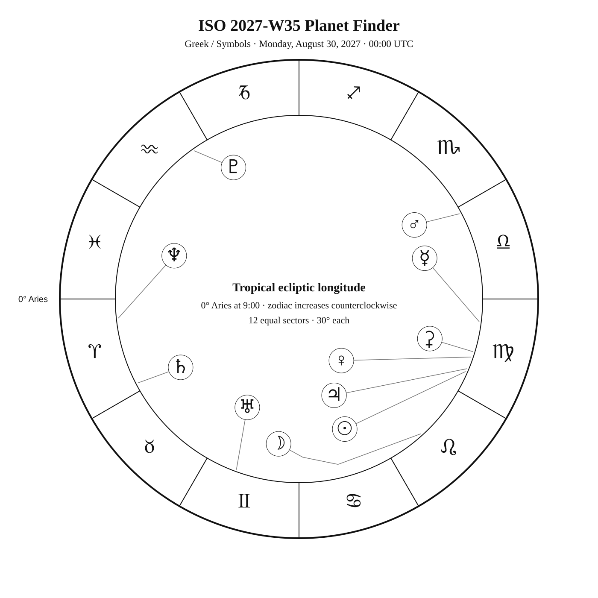
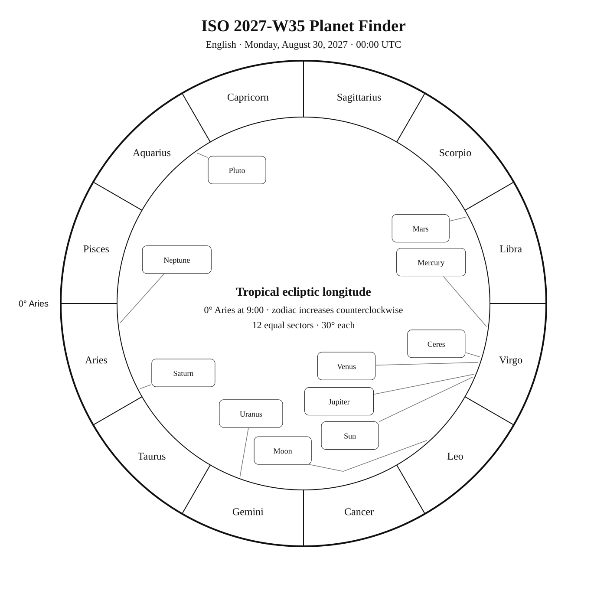

ISO 2027-W35
Week begins: Monday, August 30, 2027
Calendar
| Date | Zodiac day | Events |
|---|---|---|
| Mon, Aug 30, 2027 | ♍ 8 | |
| Tue, Aug 31, 2027 | ♍ 9 | 🌑 New Moon — 17:41:11 UTC |
| Wed, Sep 1, 2027 | ♍ 10 | M55 —  6 6.3 — Southern Summer 6 6.3 — Southern SummerSham (α Sge) —  4 4.4 — Tropical Summer 4 4.4 — Tropical Summerβ Sge — 4 4.4 — Tropical SummerFinest NGC 96 / NGC 6819 · Collinder 403 — 10 9.5 — Northern Summer |
| Thu, Sep 2, 2027 | ♍ 11 | Finest NGC 104 / NGC 6818 · Little Gem — 10 10.0 — Tropical SummerC15 / NGC 6826 · Blinking Planetary Nebula / Finest NGC 97 / NGC 6826 · Blinking Planetary — 10 9.8 — Northern SummerC57 / NGC 6822 · Barnard's Galaxy — 9 9.3 — Tropical Summer |
| Fri, Sep 3, 2027 | ♍ 12 | |
| Sat, Sep 4, 2027 | ♍ 13 | Altair (α Aql) —  Var 1 0.8 0.770–0.774 — Tropical Summer Var 1 0.8 0.770–0.774 — Tropical Summer |
| Sun, Sep 5, 2027 | ♍ 14 | M71 — 8 8.2 — Tropical SummerAlshain (β Aql) — 4 3.7 — Tropical Summer |
Weekly Solar-System Ephemeris
Snapshot: Week begins August 30, 2027, 00:00 UTC.
(-90° to +90°; defaults +45°, 21:00 LAT)
| Body | ☉︎ | ☽︎ | ☿︎ | ♀︎ | ♂︎ | ♃︎ | ♄︎ |
|---|---|---|---|---|---|---|---|
| Ecliptic | ♍︎ 6°25′ β −0°00′ | ♌︎ 12°00′ β −0°03′ | ♍︎ 22°51′ β +0°36′ | ♍︎ 11°22′ β +1°25′ | ♎︎ 28°00′ β −0°14′ | ♍︎ 7°24′ β +0°55′ | ♈︎ 27°32′ β −2°41′ |
| Observing |  | -6.5 | ☉︎ | ☉︎ | 1.3 | ☉︎ | 0.3 |
| Rise | 05:17 | 03:09 | 06:45 | 05:42 | 09:52 | 05:22 | 20:38 |
| Set | 18:43 | 17:41 | 19:19 | 18:59 | 20:30 | 18:48 | 09:49 |
Extended targets:
| Body | ⚳︎ | ♅︎ | ♆︎ | ♇︎ |
|---|---|---|---|---|
| Ecliptic | ♍︎ 13°09′ β +7°35′ | ♊︎ 9°50′ β −0°06′ | ♈︎ 6°01′ β −1°27′ | ♒︎ 5°16′ β −4°48′ |
| Observing | ☉︎ | 5.7 | 7.7 | 14.5 |
| Rise | 05:37 | 22:22 | 19:45 | 17:43 |
| Set | 19:37 | 13:38 | 07:59 | 02:22 |
β = ecliptic latitude (+ north, − south).
Rise and set are Local Apparent Time for the selected latitude.
Naked-eye observing uses the Sun’s altitude at the selected Monday observer time: Daylight (Sun ≥ −0.833°), Civil twilight (−0.833° to −6°), Nautical twilight (−6° to −12°), Astronomical twilight (−12° to −18°), and Night (below −18°).
Solar Glare identifies a body too close to the Sun when the sky-state rule does not already supersede its naked-eye classification.
The Sun’s observing status uses this same five-state sky classification.
Planet Finder


Sky Notes
Kilroy: Sky Notes · generated 2026-10-22 19:22:21 UTC
ISO 2027-W35 runs from August 30 through September 5. Uranus is about 0.0° in ecliptic longitude from Aldebaran in Taurus. Venus and Ceres are separated by about 1.8° in geocentric ecliptic longitude at the Monday 00:00 UTC snapshot.


Naked eye: 🌑 New Moon — 17:41:11 UTC. The dark Moon favors faint targets and extended star fields. Use Altair as the week’s fixed-sky framework.

Planets: Moon: Naked eye; magnitude -6.5; direct motion; 4.5% illuminated. Below the horizon at 21:00 local apparent solar time, 45°N. Monday 00:00 UTC snapshot. Solar conjunction in ecliptic longitude Aug 31 17:41 UTC. Conjunction with Mercury in ecliptic longitude Sep 02 01:28 UTC. Conjunction with Venus in ecliptic longitude Sep 01 03:10 UTC. Conjunction with Mars in ecliptic longitude Sep 04 10:25 UTC. Conjunction with Ceres in ecliptic longitude Sep 01 03:21 UTC. Conjunction with Jupiter in ecliptic longitude Aug 31 17:10 UTC. Mercury: In solar glare; magnitude -0.5; direct motion; 87.7% illuminated. Monday 00:00 UTC snapshot. Conjunction with Moon in ecliptic longitude Sep 02 01:28 UTC. Venus: In solar glare; magnitude -3.9; direct motion; 99.6% illuminated. Monday 00:00 UTC snapshot. Conjunction with Moon in ecliptic longitude Sep 01 03:10 UTC. Conjunction with Ceres in ecliptic longitude Sep 01 06:46 UTC. Mars: Naked eye; magnitude 1.3; direct motion; 92.8% illuminated. Below the horizon at 21:00 local apparent solar time, 45°N. Monday 00:00 UTC snapshot. Conjunction with Moon in ecliptic longitude Sep 04 10:25 UTC. Ceres: In solar glare; magnitude 8.5; direct motion; 99.9% illuminated. Monday 00:00 UTC snapshot. Conjunction with Moon in ecliptic longitude Sep 01 03:21 UTC. Conjunction with Venus in ecliptic longitude Sep 01 06:46 UTC. Jupiter: In solar glare; magnitude -1.7; direct motion; 100.0% illuminated. Monday 00:00 UTC snapshot. Solar conjunction in ecliptic longitude Aug 31 07:29 UTC. Conjunction with Moon in ecliptic longitude Aug 31 17:10 UTC. Saturn: Naked eye; magnitude 0.3; retrograde motion; 99.8% illuminated. Monday 00:00 UTC snapshot. Uranus: Binoculars; magnitude 5.7; direct motion; 99.9% illuminated. Below the horizon at 21:00 local apparent solar time, 45°N. Monday 00:00 UTC snapshot. Neptune: Telescope; magnitude 7.7; retrograde motion; 100.0% illuminated. Monday 00:00 UTC snapshot. Pluto: Substantial telescope; magnitude 14.5; retrograde motion; 100.0% illuminated. Monday 00:00 UTC snapshot.


Binoculars: Trace Sagitta’s charted figure in the finder, then identify Sham at its charted position. Trace Sagitta’s charted figure in the finder, then identify β Sge at its charted position. Trace Aquila’s charted figure in the finder, then identify Alshain at its charted position.
Small telescope: M55: consult its dedicated finder and observing story for equipment guidance; Collinder 403: consult its dedicated finder and observing story for equipment guidance; Little Gem: consult its dedicated finder and observing story for equipment guidance; Blinking Planetary Nebula: consult its dedicated finder and observing story for equipment guidance; Barnard's Galaxy: consult its dedicated finder and observing story for equipment guidance; M71: consult its dedicated finder and observing story for equipment guidance
Substantial telescope: No fixed-sky Calendar object is classified as requiring a substantial telescope this week.
Other objects listed this week: None
Mercury
Mercury: in solar glare at the Monday 00:00 UTC snapshot. Rises 06:45; sets 19:19 (45°N, local apparent solar time). Visual magnitude -0.5. The disk is 87.7% illuminated (gibbous). It is 16.4° from the Sun, on its east side. Motion is direct at 1.642° per day in ecliptic longitude at the snapshot. Position reference: Zavijava, 4.7° away. Conjunction with Moon in ecliptic longitude Sep 02 01:28 UTC. Mercury: 4.7° from Zavijava in the Pathfinder.
Venus
Venus: in solar glare at the Monday 00:00 UTC snapshot. Rises 05:42; sets 18:59 (45°N, local apparent solar time). Visual magnitude -3.9. The disk is 99.6% illuminated (nearly full). It is 5.1° from the Sun, on its east side. Motion is direct at 1.240° per day in ecliptic longitude at the snapshot. Position reference: Regulus, 11.2° away. Jupiter is 4.0° away at the snapshot. Conjunction with Moon in ecliptic longitude Sep 01 03:10 UTC. Conjunction with Ceres in ecliptic longitude Sep 01 06:46 UTC. Venus: 11.2° from Regulus in the Pathfinder.
Moon
Moon: naked eye at the Monday 00:00 UTC snapshot. At 45°N and 21:00 local apparent solar time, it is 24.8° below the horizon. Rises 03:09; sets 17:41 (45°N, local apparent solar time). Visual magnitude -6.5. The disk is 4.5% illuminated (waning crescent). It is 24.4° from the Sun, on its west side. Motion is direct at 14.996° per day in ecliptic longitude at the snapshot. Position reference: Acubens, 5.4° away. Solar conjunction in ecliptic longitude Aug 31 17:41 UTC. Conjunction with Mercury in ecliptic longitude Sep 02 01:28 UTC. Conjunction with Venus in ecliptic longitude Sep 01 03:10 UTC. Conjunction with Mars in ecliptic longitude Sep 04 10:25 UTC. Conjunction with Ceres in ecliptic longitude Sep 01 03:21 UTC. Conjunction with Jupiter in ecliptic longitude Aug 31 17:10 UTC. Moon: 5.4° from Acubens in the Pathfinder.
Mars
Mars: naked eye at the Monday 00:00 UTC snapshot. At 45°N and 21:00 local apparent solar time, it is 5.7° below the horizon. Rises 09:52; sets 20:30 (45°N, local apparent solar time). Visual magnitude 1.3. The disk is 92.8% illuminated (gibbous). It is 51.6° from the Sun, on its east side. Motion is direct at 0.649° per day in ecliptic longitude at the snapshot. Position reference: Spica, 4.2° away. Conjunction with Moon in ecliptic longitude Sep 04 10:25 UTC. Mars: 4.2° from Spica in the Pathfinder.
Jupiter
Jupiter: in solar glare at the Monday 00:00 UTC snapshot. Rises 05:22; sets 18:48 (45°N, local apparent solar time). Visual magnitude -1.7. The disk is 100.0% illuminated (nearly full). It is 1.3° from the Sun, on its east side. Motion is direct at 0.217° per day in ecliptic longitude at the snapshot. Position reference: Regulus, 7.2° away. Venus is 4.0° away at the snapshot. Solar conjunction in ecliptic longitude Aug 31 07:29 UTC. Conjunction with Moon in ecliptic longitude Aug 31 17:10 UTC. Jupiter: 7.2° from Regulus in the Pathfinder.
Saturn
Saturn: naked eye at the Monday 00:00 UTC snapshot. At 45°N and 21:00 local apparent solar time, it is 3.3° above the horizon. Rises 20:38; sets 09:49 (45°N, local apparent solar time). Visual magnitude 0.3. The disk is 99.8% illuminated (nearly full). It is 128.8° from the Sun, on its west side. Motion is retrograde at 0.034° per day in ecliptic longitude at the snapshot. Position reference: Alrescha, 6.8° away. Saturn: 6.8° from Alrescha in the Pathfinder.
Uranus
Uranus: binoculars at the Monday 00:00 UTC snapshot. At 45°N and 21:00 local apparent solar time, it is 11.7° below the horizon. Rises 22:22; sets 13:38 (45°N, local apparent solar time). Visual magnitude 5.7. The disk is 99.9% illuminated (nearly full). It is 86.6° from the Sun, on its west side. Motion is direct at 0.014° per day in ecliptic longitude at the snapshot. Position reference: Aldebaran, 5.4° away. Uranus: 5.4° from Aldebaran in the Pathfinder.
Neptune
Neptune: telescope at the Monday 00:00 UTC snapshot. At 45°N and 21:00 local apparent solar time, it is 12.6° above the horizon. Rises 19:45; sets 07:59 (45°N, local apparent solar time). Visual magnitude 7.7. The disk is 100.0% illuminated (nearly full). It is 150.4° from the Sun, on its west side. Motion is retrograde at 0.023° per day in ecliptic longitude at the snapshot. Position reference: Diphda, 19.6° away. Neptune: 19.6° from Diphda in the Pathfinder.
Ceres
Ceres: in solar glare at the Monday 00:00 UTC snapshot. Rises 05:37; sets 19:37 (45°N, local apparent solar time). Visual magnitude 8.5. The disk is 99.9% illuminated (nearly full). It is 10.1° from the Sun, on its east side. Motion is direct at 0.460° per day in ecliptic longitude at the snapshot. Position reference: Denebola, 9.9° away. Conjunction with Moon in ecliptic longitude Sep 01 03:21 UTC. Conjunction with Venus in ecliptic longitude Sep 01 06:46 UTC. Ceres: 9.9° from Denebola in the Pathfinder.
Pluto
Pluto: substantial telescope at the Monday 00:00 UTC snapshot. At 45°N and 21:00 local apparent solar time, it is 19.8° above the horizon. Rises 17:43; sets 02:22 (45°N, local apparent solar time). Visual magnitude 14.5. The disk is 100.0% illuminated (nearly full). It is 148.5° from the Sun, on its east side. Motion is retrograde at 0.019° per day in ecliptic longitude at the snapshot. Position reference: Dabih, 9.4° away. Pluto: 9.4° from Dabih in the Pathfinder.
Highlights
Mercury
In solar glare; magnitude -0.5; direct motion; 87.7% illuminated. Monday 00:00 UTC snapshot. Conjunction with Moon in ecliptic longitude Sep 02 01:28 UTC. Mercury: 4.7° from Zavijava in the Pathfinder.
Venus
In solar glare; magnitude -3.9; direct motion; 99.6% illuminated. Monday 00:00 UTC snapshot. Conjunction with Moon in ecliptic longitude Sep 01 03:10 UTC. Conjunction with Ceres in ecliptic longitude Sep 01 06:46 UTC. Venus: 11.2° from Regulus in the Pathfinder.
Moon
Naked eye; magnitude -6.5; direct motion; 4.5% illuminated. Below the horizon at 21:00 local apparent solar time, 45°N. Monday 00:00 UTC snapshot. Solar conjunction in ecliptic longitude Aug 31 17:41 UTC. Conjunction with Mercury in ecliptic longitude Sep 02 01:28 UTC. Conjunction with Venus in ecliptic longitude Sep 01 03:10 UTC. Conjunction with Mars in ecliptic longitude Sep 04 10:25 UTC. Conjunction with Ceres in ecliptic longitude Sep 01 03:21 UTC. Conjunction with Jupiter in ecliptic longitude Aug 31 17:10 UTC. Moon: 5.4° from Acubens in the Pathfinder.
Mars
Naked eye; magnitude 1.3; direct motion; 92.8% illuminated. Below the horizon at 21:00 local apparent solar time, 45°N. Monday 00:00 UTC snapshot. Conjunction with Moon in ecliptic longitude Sep 04 10:25 UTC. Mars: 4.2° from Spica in the Pathfinder.
Jupiter
In solar glare; magnitude -1.7; direct motion; 100.0% illuminated. Monday 00:00 UTC snapshot. Solar conjunction in ecliptic longitude Aug 31 07:29 UTC. Conjunction with Moon in ecliptic longitude Aug 31 17:10 UTC. Jupiter: 7.2° from Regulus in the Pathfinder.
Saturn
Naked eye; magnitude 0.3; retrograde motion; 99.8% illuminated. Monday 00:00 UTC snapshot. Saturn: 6.8° from Alrescha in the Pathfinder.
Uranus
Binoculars; magnitude 5.7; direct motion; 99.9% illuminated. Below the horizon at 21:00 local apparent solar time, 45°N. Monday 00:00 UTC snapshot. Uranus: 5.4° from Aldebaran in the Pathfinder.
Neptune
Telescope; magnitude 7.7; retrograde motion; 100.0% illuminated. Monday 00:00 UTC snapshot. Neptune: 19.6° from Diphda in the Pathfinder.
Ceres
In solar glare; magnitude 8.5; direct motion; 99.9% illuminated. Monday 00:00 UTC snapshot. Conjunction with Moon in ecliptic longitude Sep 01 03:21 UTC. Conjunction with Venus in ecliptic longitude Sep 01 06:46 UTC. Ceres: 9.9° from Denebola in the Pathfinder.
Pluto
Substantial telescope; magnitude 14.5; retrograde motion; 100.0% illuminated. Monday 00:00 UTC snapshot. Pluto: 9.4° from Dabih in the Pathfinder.